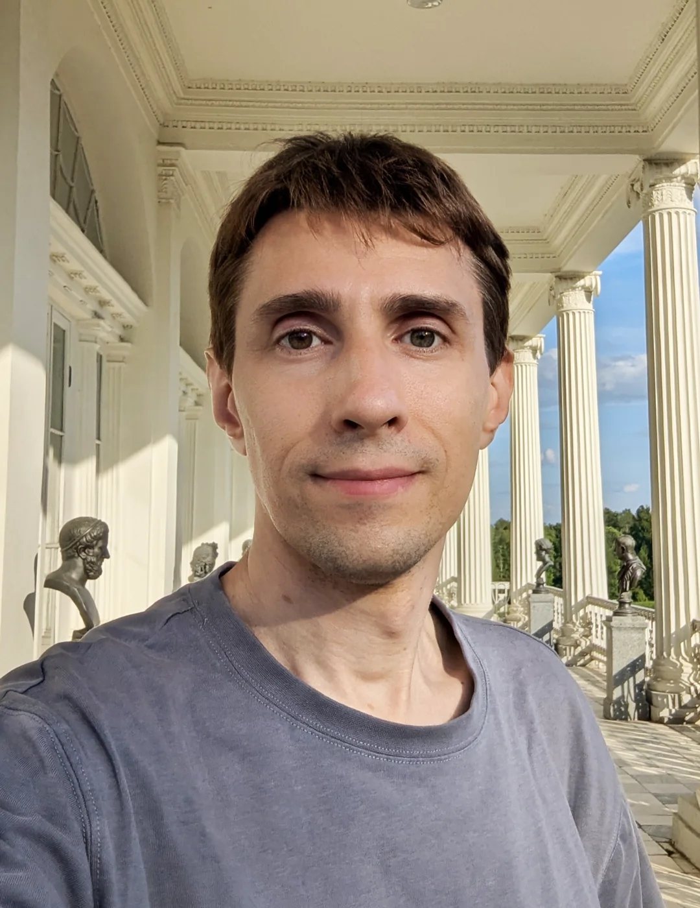
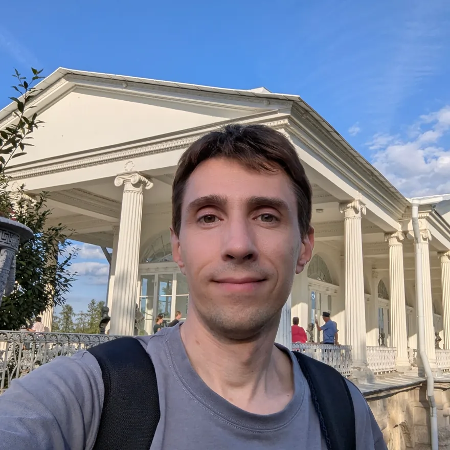
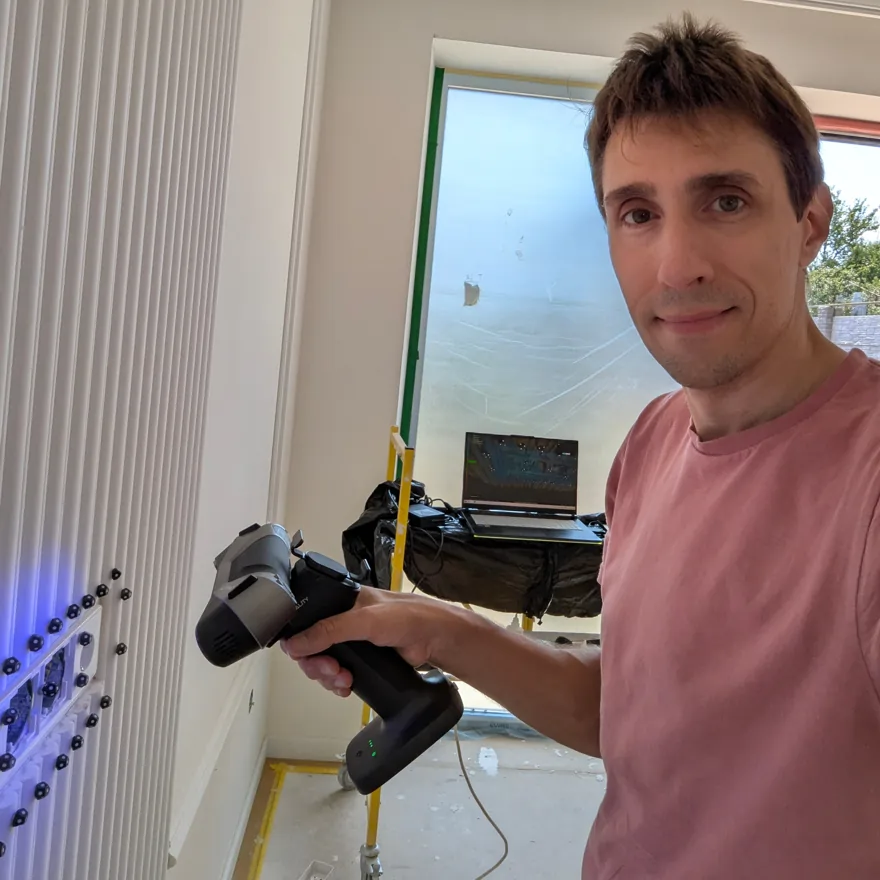
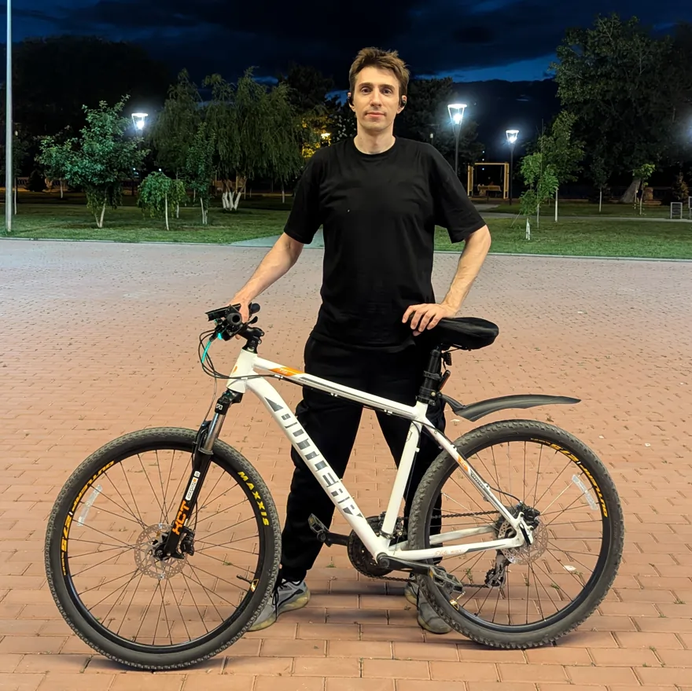
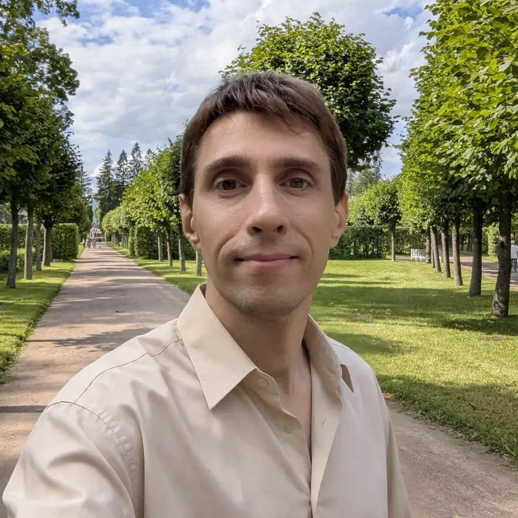
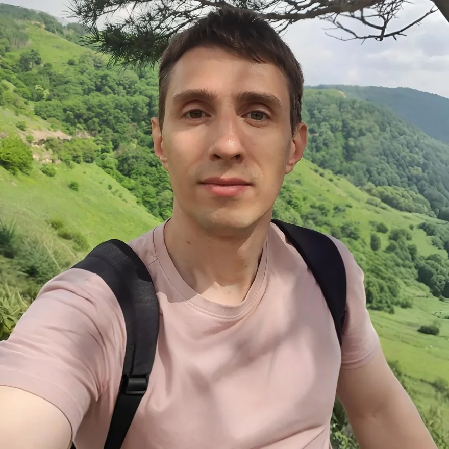
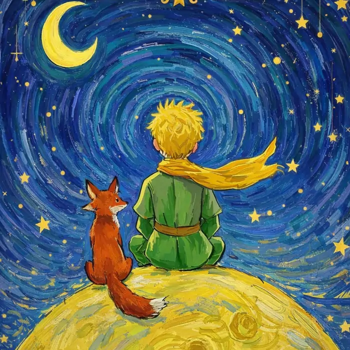

Я — человек на стыке технического и творческого. Во мне довольно хорошо уживаются инженер, 3D-моделлер, преподаватель, художник, электронщик и начинающий актёр. А в последние годы к этому добавился большой интерес к психологии и отношениям. ❤️
Привет,
я Антон
ИЗ Г. АСТРАХАНЬ
Я люблю создавать вещи, идеи и моменты, которые потом хочется вспоминать. Люблю спорт и велосипедные прогулки, изучаю психологию и прокачиваю свой эмоциональный интеллект.
Ищу девушку для построения долгосрочных отношений.
✨инженер & преподаватель
3Dдизайн & печать
🚴велосипед & ЗОЖ
📈инвестиции

ПРИЯТНО
ПОЗНАКОМИТЬСЯ ✦
ПОЗНАКОМИТЬСЯ ✦
СОЗДАЮ
СВОЁ
СВОЁ
01 / ОБО МНЕ
ТЕХНИКА × ТВОРЧЕСТВО × ЛЮДИ
Собираю жизнь
из идей, чувств
и импровизации
Мне нравится придумывать и создавать то, чего ещё не существует: иногда это полезная вещь, иногда сложный технический проект. Но удовольствие мне приносят и совсем простые бытовые творческие процессы — например, приготовление еды. 🍳
Самое большое удовольствие для меня — возможность разделять творческий процесс с близкими людьми. Создавать что-то вместе, неважно, сложное или простое: нарисовать, напечатать в 3D, собрать, приготовить или исследовать новое. Для меня творчество — это продолжение души. А иногда — её глубинная потребность. 🫂
Я достаточно рационально отношусь к работе и деньгам и уже создал для себя устойчивую материальную основу. У меня есть своя квартира, своё дело и доход от инвестиций. Но для меня гораздо важнее люди, близость, впечатления, развитие и то, что мы можем пережить и создать вместе. 🏠
Я ценю искренность, взаимность, эмпатию и возможность оставаться собой рядом с другим человеком. Мне интересны отношения, в которых два самостоятельных человека делают жизнь друг друга теплее, интереснее и насыщеннее. 👩❤️👨
Наверное, поэтому мне неинтересно создавать вокруг себя образ загадочного и недоступного мужчины, чтобы казаться привлекательнее. Мне гораздо интереснее быть живым человеком: иногда серьёзным, иногда грустным, иногда смешным; способным увлечься новой идеей, полюбить и сказать об этом не вовремя, признать свою неправоту, чему-то научиться — и снова придумать какую-нибудь штуку, которую совершенно необязательно было придумывать. 🌱
02 / КАДРЫ ЖИЗНИ
Листай вправо →





МОЯ ДЕЯТЕЛЬНОСТЬ
Создаю вещи
Вдохновляюсь
людьми
По образованию я инженер-строитель, а сейчас работаю на пересечении 3D-моделирования, образования и предпринимательства. Мне нравится превращать идеи в осязаемые вещи — я занимаюсь 3D-печатью.
Постоянно учусь, пробую новое и с удовольствием делюсь тем, что умею.
«Вижу ценность не в цене, а во внутреннем мире»
ВО МНЕ УЖИВАЮТСЯ
Противоположности,
которым хорошо вместе
Не выбираю между разумом и чувственным — мне интересно соединять всё воедино.
Инженер+Творческий человек
Рациональный+Романтик
Любитель DIY+Любитель психологии
Изобретатель+Актёр
Регулярные инвестиции+Спонтанные траты на идеи
Ночь с 3D-принтером+Массаж любимому человеку
Молчать в компании+Проболтать до утра вдвоём
СО МНОЙ МОЖНО…
Делить не только время,
но и впечатления
например:
- 01В тёплое время года уехать на велосипеде кататься по городу.
- 02Придумать какую-нибудь вещь — и через несколько часов держать её в руках.
- 03Вместе готовить ужин и обсуждать психологию.
- 04Поехать в незнакомый город и весь день исследовать его пешком.
- 05Сделать что-нибудь творческое вместе: рисовать, красить, паять или печатать на 3D-принтере.
- 06Рассматривать архитектуру, фотографировать красивые места и исследовать всё необычное.
- 07Разговаривать на глубокие и сложные темы без споров, с принятием точек зрения друг друга.
- 08Вместе осваивать новое хобби, в котором оба сначала ничего не умеем.
- 09Учить друг друга тому, что каждый умеет лучше.
- 10Смотреть фильм или читать книгу, а потом вместе обсуждать персонажей и сюжет.
- 11Пойти на актёрский, художественный или другой необычный мастер-класс просто ради нового опыта.
- 12Поддерживать друг друга в собственных увлечениях, даже если они совсем разные.
Значение имени

Имя с историей
Меня назвали в честь французского писателя Антуана де Сент-Экзюпери. Какие-то черты знаменитого тёзки присущи и мне:
Инженерный ум и романтизм
Инженер с душой романтика. Обретаю творческую энергию во взаимных отношениях. Мечтаю проектировать, программировать и создавать материальные вещи вместе с любимым человеком.
Гуманизм
В материальном мире больше ценю не вещи, а сближение человеческих душ.
Развитая эмпатия
Стараюсь чувствовать то, что чувствуют другие, и смотреть на мир чужими глазами. Иногда мне нужно на это немного времени.
ЗАБАВНЫЕ ФАКТЫ ОБО МНЕ
Десять историй,
которые не поместились
в обычную анкету
10
ФАКТОВ
ФАКТОВ
- 01
В 8 лет нашёл дедушкину книгу по автоматике, раздобыл лампочки и провода — собрал свой первый фонарик.
- 02
Первый 3D-принтер появился, когда мы с другом решили делать сувенирные снежные шары. В 2013 году я стал одним из первых владельцев 3D-принтера в городе — а со временем 3D-технологии стали моей профессией.
- 03
Однажды мы с друзьями спасли котёнка из колодца, выложили видео на YouTube и нашли ему хозяев. Посмотреть видео ↗
- 04
Был за Полярным кругом и гладил оленей.
- 05
Делал собственный умный дом задолго до того, как это стало мейнстримом.
- 06
Начал ходить на курсы актёрского мастерства и побывал актёром в настоящем театральном представлении.
- 07
Пишу книгу о психологии отношений — постоянно дополняю её, чтобы не совершать прежних ошибок.
- 08
Научился плавать только в 30 лет.
- 09
В студенческие годы с компанией друзей снимал юмористические видео и занимался импровизацией.
- 10
В детстве увидел, как мама разделывает свежую рыбу, уговорил оставить одну живой, а потом отнёс и выпустил её в реку.
МОЯ АНКЕТА
Немного фактов,
которые многое говорят
🍰 Возраст 37 лет
Но здоровье лучше, чем в 27. Спасибо ЗОЖ.
🔝 Рост 185 см
Вес обычно 70–75 кг.
👶 Детей нет
был женат, сейчас в разводе
Не чайлдфри. Вижу высшую ценность в создании долгосрочных и здоровых отношений. При этом считаю, что женщина вправе сама выбирать отношение к рождению детей.
♓ Знак зодиака - Рыбы
Асцендент в Рыбах, Луна в Козероге.
⚡ Телосложение стройное
В планах еще подкачаться и набрать мышечной массы.
🖤 Вредные привычки - периодическая меланхолия
Иногда бываю чуть депрессивным, но искренне стремлюсь стать более позитивным.
🍷 Нет алкогольных, некатиновых, игровых зависимостей
Алкоголь — редко и очень умеренно; не курю. Компьютерными играми не увлекаюсь. Я не радикальный противник "вредностей", просто меня это не привлекает.
💻 Деятельность и интересы
Работаю в 3D-дизайне и образовании, развиваю бизнес по 3D-моделированию и печати. Люблю технологии, искусство, DIY, творчество, глубокие разговоры, психологию, долгие прогулки и уютные места.
🏠 Есть свой жильё
Двухкомнатная квартира в Астрахани, район ТЦ «Три кота».
✅ Нет долгов, кредитов, алиментов
Ипотека была единственным кредитом — уже давно закрыта.
📈 Доход 163 тыс. ₽
Среднемесячный доход за два года по данным выписки ФНС: зарплата + предпринимательство + инвестиции.
🚴 Стиль жизни
Осознанное потребление и инвестиции - вместо трат на понты. Хочу, чтобы меня ценили не за обложу, а за внутренний мир.
🚩 Потенциальные ред-флаги
Не автомобилист (хотя права есть, раньше водил), часто езжу на велосипеде и не всегда слежу за стилем, есть бывшие девушки в соцсетях.
💚 Потенциальные грин-флаги
Признаю важность психологии и развиваю эмоциональный интеллект. Умею чинить вещи и готовить, люблю готовить вместе, мою посуду, поддерживаю чистоту. Искренний, тактильный, самодостаточный и умею помогать в быту.
🎯 План на 5 лет
Приобрести своё жильё в более благополучном городе, чем Астрахань. Рассматриваю Москву, Питер, Краснодар
ГДЕ Я БЫВАЛ
Города, дороги
и новые впечатления
19 точек на моей личной карте — и это только начало.
Санкт-ПетербургМоскваСочиНадымЯкутияНовосибирскМурманскНикельМончегорскКраснодарГеленджикКисловодскКазаньВолгоградНижний НовгородПензаРостовСтамбулКемер😆Камызяк
ТЕПЛО
·
ИСКРЕННОСТЬ
·
ОБЩИЙ ВЗГЛЯД
КОГО Я ИЩУ
Ищу стройную девушку от 25 до 37 лет, которая ценит здоровый образ жизни. Свободную (без маленьких детей), открытую к общению и серьезным отношениям.
Идеальная точка соприкосновения: наличие творческих хобби или профессии: дизайн, архитектура, искусство, интерес к созданию чего-либо своими руками. 3D-моделирование или творческие темы станут отличным началом разговора.
Если откликается —
напиши мне
Если стесняешься, то хотя бы намекни мне лайками на фото. А лучше — напиши: простое «привет» уже хороший старт.